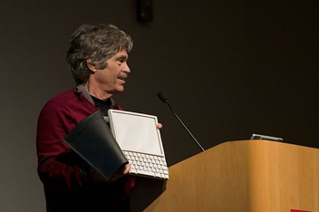
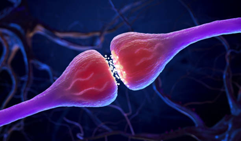
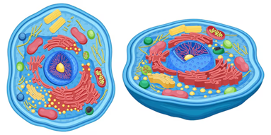
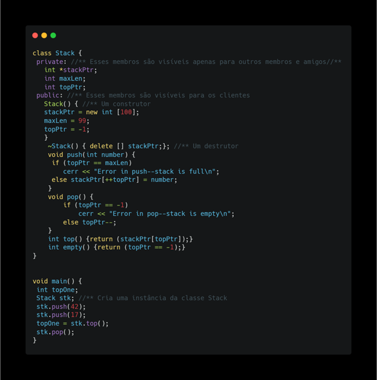

Conceitos de programação Orientada a Objetos
1. Visão de Alan Kay
Alan Kay começou a desenvolver a Programação Orientada a Objetos nos anos 1960, influenciado pelo Sketchpad, Simula, ARPANET e sua formação em biologia. Para ele, a POO se baseava em três pilares: troca de mensagens (messaging), retenção local e ocultação de estado (local retention and protection), e ligação tardia extrema (extreme late-binding). Essas ideias definiam a POO como uma filosofia de comunicação e modularidade, diferenciando-se das abordagens centradas em dados.
1.1. Troca de Mensagens
Objetos como "células" que trocam mensagens: Kay comparava objetos a células biológicas, que se comunicam enviando e recebendo sinais. Essa comunicação ocorre por meio de trocas de mensagens, em vez de acesso direto aos dados.
Encapsulamento e eliminação de acesso direto a dados: Para Kay, o foco era substituir a manipulação direta de dados pela comunicação através de mensagens, o que promove a ocultação de informações e reforça a independência dos objetos. Isso assegura que cada objeto gerencie seu próprio estado sem interferência externa.
Programadores não são "Máquinas de Turing": Ele argumentava que a POO deveria se afastar do modelo tradicional de manipulação de dados e se aproximar de uma comunicação mais natural e orgânica, semelhante a sistemas biológicos ou distribuídos.
1.2. Retenção local e ocultação de estado
Encapsulamento como princípio fundamental:
Na visão de Kay, o encapsulamento era central para a POO, limitando o acesso ao estado interno do objeto. Isso permitia que os objetos controlassem suas próprias modificações, reforçando a ideia de retenção local, onde cada objeto mantém seu estado de forma segura.Objetos como entidades independentes que gerenciam seu próprio estado: O acesso direto ao estado de um objeto era evitado, promovendo uma abordagem em que a manipulação de dados ocorria exclusivamente através de mensagens, permitindo que os objetos fossem "agentes ativos" que respondem a estímulos.
Substituição de dados acessíveis por comportamentos encapsulados:
Em vez de ver os objetos apenas como recipientes de dados com métodos para manipulação, Kay via os objetos como possuidores de comportamentos internos que respondiam dinamicamente às mensagens recebidas.
1.3. Ligação tardia
Dinamismo e ligação tardia extrema:
Para Kay, a ligação tardia permitia adiar a decisão sobre qual método seria chamado até o momento da execução. Isso possibilita que diferentes objetos respondessem à mesma mensagem de maneiras diversas, dependendo do contexto.Polimorfismo como extensão natural da ligação tardia:
O polimorfismo, na visão de Kay, envolvia a capacidade dos objetos de responder de forma flexível a mensagens semelhantes. Isso ia além da sobrescrita de métodos em subclasses, permitindo comportamentos dinâmicos que se ajustavam ao contexto.Composição em vez de herança rígida:
Ele via a herança estrita como uma limitação e preferia sistemas onde os objetos pudessem evoluir e modificar seu comportamento de forma fluida. A composição e a comunicação entre objetos eram mais importantes do que uma hierarquia fixa.
1.4. NON-DATA POO vs Tipos abstratos de dados
A visão de Alan Kay sobre POO era centrada na eliminação de dados acessíveis e na comunicação por mensagens, com os objetos agindo como "agentes ativos" que gerenciam seu próprio estado e interagem dinamicamente. Para ele, a POO não deveria focar em dados, mas sim no comportamento e na flexibilidade de objetos que respondem a estímulos. No entanto, a comunidade de computação seguiu um caminho diferente, adotando a POO como uma forma de encapsular dados e expor operações por meio de interfaces, seguindo a abordagem dos Abstract Data Types (ADTs).
2. Robert Sebesta sobre POO: o que uma linguagem deve ter para suportar orientação a objetos?
Para que uma linguagem de programação suporte orientação a objetos (POO), ela precisa fornecer suporte a três elementos-chave: tipos de dados abstratos, herança e vinculação dinâmica de chamadas a métodos.
2.1. Tipos abstratos de dados
A abstração é a capacidade de representar algo apenas com seus atributos e comportamentos mais relevantes, removendo detalhes desnecessários. Ela é fundamental para combater a complexidade dos sistemas, pois permite focar nos aspectos essenciais.
Existem dois tipos principais de abstração:
Abstração de processos: Utiliza subprogramas para representar ações específicas, como
sortInt(list, listLen).Abstração de dados: Representa um dado com seus atributos essenciais, sem se preocupar com os detalhes de implementação, por exemplo, tratar um dado
Pessoaapenas com as informações mais significativas.
Um tipo abstrato de dado (TAD) é um exemplo de abstração de dados e deve satisfazer duas condições:
1. O programa que usa o TAD não precisa conhecer sua implementação interna, apenas as operações disponíveis, promovendo encapsulamento e ocultação de informações.
2. A implementação do tipo e seus protocolos de operação devem estar contidos em uma única unidade sintática.
Um exemplo classico de tipo abstrato de dados é uma pilha:
2.1.2. Questões de projeto sobre os TADS
Atualmente, C# é uma das linguagens de programação mais populares do mundo, usada em uma ampla variedade de aplicações, desde sistemas corporativos até jogos (com Unity), desenvolvimento de aplicativos móveis (Xamarin), e aplicações web (ASP.NET Core). A linguagem continua a evoluir, mantendo-se moderna e adotando novas funcionalidades para facilitar o desenvolvimento e melhorar a performance.
Referência: : Stack Overflow Developer Survey e TIOBE Index https://survey.stackoverflow.co
"O SRP diz que uma classe deve ter apenas uma razão para mudar, ou seja, ela deve ter apenas uma responsabilidade." Antes de aplicar o SRP: